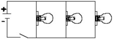
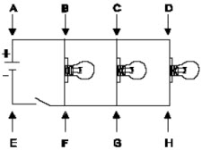

| Objetivo: |
Estudiar la asociación de resistores en paralelo.
|
|
| Introducción: |
|
En los aparatos con los cuales convivimos diariamente, existen diversos tipos de circuitos eléctricos. Entre los más sencillos están aquellos que presentan una fuente eléctrica, una llave o interruptor y un solo tipo de componente eléctrico. Cuando este
componente es un resistor, como en el caso de algunas duchas, lámparas y algunos calentadores, llamamos el circuito de resistivo.
Los circuitos resistivos se tornan más complejos cuando involucran más de un resistor, pudiendo existir dos formas de
combinación de estos resistores. Son las llamadas asociaciones en serie y en paralelo.
En la asociación en paralelo, si desconectamos uno de los componentes, los demás componentes contináan conectados, en este tipo
de asociación, todo ocurre, como si cada componente estuviese conectado directamente a la fuente, funcionado
independientemente unos de otros.
|
|
|
| Desarrollo Experimental: |
|
Experimento 1:
Use las tres lámparas y monte la configuración indicada en la Figura 1.
Use, en este caso, una fuente de alimentación y el interruptor indicado, será la propia llave del panel de control.
Acompañe la Tabla 1 con las acciones sugeridas, para el conjunto de lámparas y posteriormente para el conjunto de resistores.
Observe atentamente, las alteraciones ocurridas y anote en su espacio propio de la tabla. Para las medidas de tensión, observe las
indicaciones de la Figuras 3.
Realiza los procedimientos de Inicio y operación de la interface (ver manual), Inicia el Programa Excel para
la adquisición de datos con el Voltaje. Determina el intervalo de tiempo para
las mediciones por medio del
temporizado.
Debemos recordar que para medir voltajes: se coloca el sensor en paralelo con el circuito.
|
| Resultados y Conclusiones: |
|
1. ¿Cuál
el voltaje aproximado abastecido por la fuente, cuándo su selector está en 50%
y 100%? ¿Cómo podemos determinarlo con mayor exactitud y precisión?
2. ¿Qué ocurre cuando desconectamos uno de los componentes? ¿Cuáles son las implicaciones de este hecho?
3. ¿Qué podemos afirmar respecto de
las tensiones sobre cada uno de los componentes y de la tensión total sobre el
sistema?
|
|
|
| Figura 1: |
|  |
| |
| Figura 3: |
|  |
|